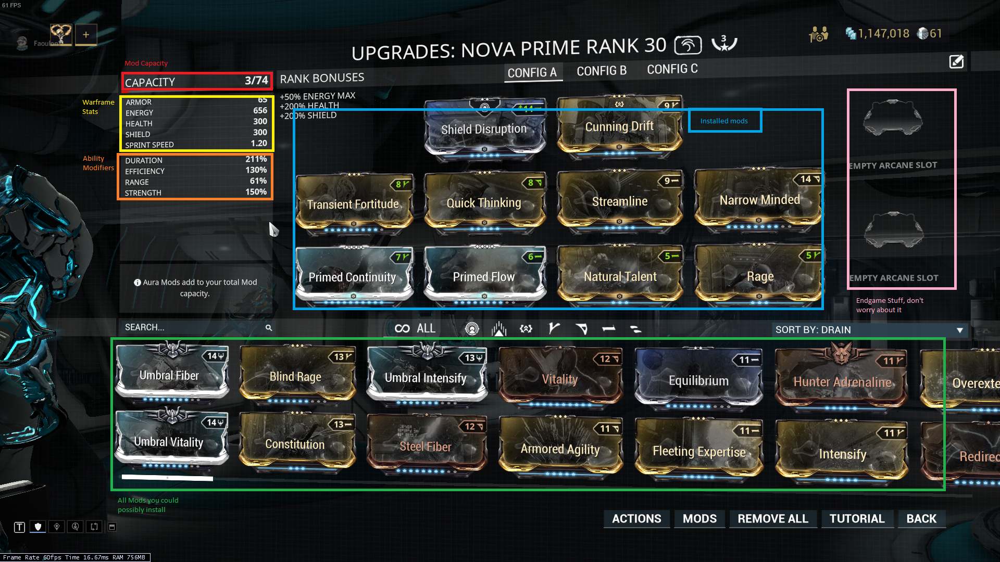

Two of the key things to remember in modding anything in warframe are mod level and capacity. Each warframe or weapon has a maximum mod capacity, and a number of mod slots. The capacity can be increased by ranking up your warframe, and also applying orokin reactors or catalysts, known by the community as potatos. Mods take up a specific amount of capacity and one slot. The capscity is specific to the mod, and if the mod is placed in a matching polarity slot, then its capacity cost is halved. Mod level increases a mod's effectiveness, but also its capacity cost. However, you still want to use the highest level mods you can.
Important places on the mod screen